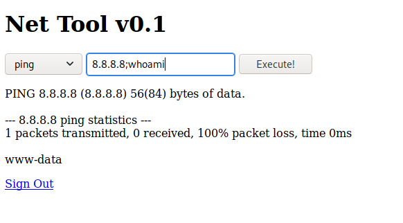

On commence par faire un nmap pour scanner les ports ouverts et ainsi connaitre les services et leurs versions utilisées
On constate que le port 80 est ouvert. La page qui s'affiche lorsqu'on cherche à accéder au serveur est la page par défaut d'Apache.
Lorsqu'on cherche à accéder à www.cronos.htb le message d'erreur semble indiquer que la page n'existe pas.
A l'aide des commandes suivantes on essaie d'obtenir les noms de domaines associés à l'IP 10.10.10.13
La commande dig - permet de faire un transfert de zone et récupérer les données présente sur le serveur DNS de la victime
On complete le fichier etc/hosts pour pouvoir avoir accès aux pages admin.cronod.htb et cronos.htb.
A l'aide de burpsuite et de l'outils sqlmap on constate qu'une injection sql est possible dans le username.
La page obtenue nous permet d'envoyer des commandes au serveur en tant que www.data
On utilise un reverse shell en python et on obtient un shell en tant que www.data
On utilise linpeas pour élever nos privilèges et devenir root

On constate que le fichier artisan est exécuté en temps que root